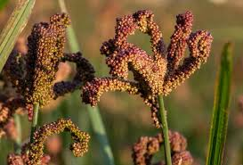
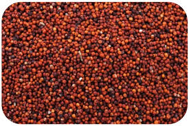
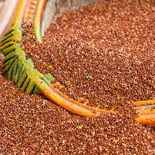

FINGER MILLET
Introduction

Finger millet (Eleusine coracana) is an annual herbaceous plant widely grown as a cereal crop in the arid and semiarid areas in Africa and Asia. It is a tetraploid and self-pollinating species probably evolved from its wild relative Eleusine africana.
Finger millet is native to the Ethiopian and Ugandan highlands. Interesting crop characteristics of finger millet are the ability to withstand cultivation at altitudes over 2,000 metres (6,600 ft) above sea level, its high drought tolerance, and the long storage time of the grains.
Nutritions
Finger millet, also known as ragi or African millet, is a highly nutritious grain that offers several health benefits. Here are some key nutritional aspects of finger millet:
- Carbohydrates: Finger millet is rich in carbohydrates, making it a good source of energy. It has a lower glycemic index compared to refined grains, which can help regulate blood sugar levels.
- Protein: It contains a moderate amount of protein, making it a valuable protein source for vegetarians and vegans. The protein in finger millet is also high in essential amino acids, especially methionine and cysteine, which are often limited in other cereal grains.
- Dietary Fiber: Finger millet is high in dietary fiber, including both soluble and insoluble fiber. This fiber content aids in digestion, promotes satiety, and helps regulate cholesterol levels.
- Vitamins and Minerals:
- Calcium: Finger millet is one of the richest sources of calcium among cereals, making it beneficial for bone health and preventing osteoporosis.
- Iron: It is a good source of iron, which is important for red blood cell production and preventing iron deficiency anemia.
- Magnesium: Finger millet is rich in magnesium, which plays a role in muscle function, nerve function, and bone health.
- Vitamin B-complex: It contains various B vitamins such as thiamine (B1), riboflavin (B2), niacin (B3), and folate (B9), which are essential for energy production, metabolism, and overall health.
- Antioxidants: Finger millet contains antioxidants such as phenolic compounds and flavonoids, which help protect cells from oxidative stress and reduce the risk of chronic diseases.
- Gluten-Free: Finger millet is naturally gluten-free, making it suitable for individuals with gluten intolerance or celiac disease.
Incorporating finger millet into your diet can provide a range of nutrients and health benefits, especially for those looking for a gluten-free, nutrient-dense alternative to other grains.
Soil and Nutritions

Finger millet, also known as ragi or African millet, has specific soil and nutritional requirements for optimal growth and yield. Here are the key considerations for finger millet regarding soil and nutrition:
- Soil Type: Finger millet thrives in well-drained soils with good moisture retention. It can tolerate a wide range of soil types, including sandy loam, loamy, and clayey soils, as long as they are well-drained and not waterlogged.
- Level: Finger millet prefers slightly acidic to neutral soil pH levels ranging from 5.5 to 7.0. Soil pH outside this range can affect nutrient availability and plant growth.
- Nutrient Requirements:
- Nitrogen (N): Finger millet has a moderate to high nitrogen requirement throughout its growth stages. Adequate nitrogen promotes vigorous growth and grain development. Apply nitrogen fertilizer based on soil test recommendations or use organic sources like compost or manure.
- Phosphorus (P): Phosphorus is crucial for root development and early growth in finger millet. Apply phosphorus fertilizer before planting, especially if soil test results indicate a deficiency.
- Potassium (K): Potassium is essential for overall plant health, stress tolerance, and grain filling in finger millet. Ensure sufficient potassium levels in the soil by using potassium-rich fertilizers.
- Micronutrients: Finger millet may benefit from micronutrient applications, especially if soil tests reveal deficiencies in elements like zinc, iron, manganese, and copper. Micronutrient deficiencies can be corrected using chelated micronutrient fertilizers.
- Fertilization:
- Conduct a soil test before planting to determine nutrient levels and pH. Adjust fertilization based on soil test recommendations to meet finger millet's specific nutrient needs.
- Use balanced fertilizers with nitrogen, phosphorus, and potassium (N-P-K) ratios suitable for finger millet cultivation.
- Consider organic fertilizers such as compost, manure, or biofertilizers to improve soil fertility and promote sustainable nutrient management.
- Crop Rotation and Soil Health: Practice crop rotation with legumes or other crops to improve soil structure, nutrient cycling, and reduce pest and disease pressure.
By addressing these soil and nutritional requirements, you can optimize finger millet production and ensure healthy plant growth and grain yield.
How to grow Finger millet
Growing finger millet, also known as ragi or African millet, involves several steps to ensure successful cultivation. Here's a guide on how to grow finger millet:
- Selecting the Right Site:
- Choose a site with well-drained soil that receives full sunlight. Finger millet can tolerate various soil types but prefers slightly acidic to neutral soil with a pH of 5.5 to 7.0.
- Preparing the Soil:
- Prepare the soil by plowing or tilling to a fine texture. Remove weeds and debris from the planting area.
- Incorporate organic matter such as compost or well-rotted manure into the soil to improve fertility and moisture retention.
- Seed Selection and Sowing:
- Select high-quality finger millet seeds from a reliable source. The seeds should be clean, healthy, and free from disease.
- Sow the seeds directly into the prepared soil at a depth of about 2 to 3 centimeters. Space the seeds evenly in rows with sufficient distance between rows for proper plant growth.
- Watering:
- Water the planted seeds immediately after sowing to ensure good soil moisture for germination.
- Provide regular watering throughout the growing season, especially during dry periods. Avoid overwatering, as excess moisture can lead to fungal diseases.
- Fertilization:
- Conduct a soil test before planting to determine nutrient levels and pH. Based on the soil test results, apply balanced fertilizers with nitrogen, phosphorus, and potassium (N-P-K) as needed.
- Consider using organic fertilizers like compost or well-decomposed manure to supplement soil nutrients and improve soil health.
- Weed Control:
- Keep the planting area free from weeds by regular cultivation or mulching. Weeds compete with finger millet plants for nutrients, water, and sunlight, so timely weed control is essential.
- Pest and Disease Management:
- Monitor the crop for pests such as grasshoppers, aphids, and armyworms. Use appropriate pest control methods if pest populations exceed tolerable levels.
- Practice crop rotation and maintain good hygiene to minimize the risk of diseases such as blast, rust, and smut.
- Harvesting:
- Finger millet typically matures in about 90 to 120 days after sowing, depending on the variety and growing conditions.
- Harvest the mature grains when the panicles turn brown and dry. Cut the panicles from the plants and thresh to separate the grains from the straw.
By following these steps and providing proper care, you can successfully grow finger millet and obtain a healthy harvest of nutritious grains.
Fertilizing

Finger millet, like other crops, benefits from appropriate fertilization to ensure healthy growth and optimal yield. Here are some guidelines for fertilizing finger millet:
- Soil Testing: Before fertilizing, conduct a soil test to determine the nutrient levels and pH of the soil. This information will guide you in applying the right type and amount of fertilizers.
- Nitrogen (N):
- Finger millet has a moderate to high nitrogen requirement throughout its growth stages.
- Apply nitrogen fertilizer based on the soil test results and the crop's growth stage. Splitting nitrogen application into multiple doses can improve nutrient uptake efficiency.
- Apply the initial dose of nitrogen at sowing or shortly after emergence to support early growth. Subsequent applications can be done during the vegetative and reproductive stages.
- Phosphorus (P):
- Phosphorus is essential for root development, flowering, and seed formation in finger millet.
- Apply phosphorus fertilizer before planting or at the early stages of crop growth. Incorporate phosphorus into the soil to ensure availability to the developing roots.
- Potassium (K):
- Potassium is important for overall plant health, stress tolerance, and grain filling in finger millet.
- Apply potassium fertilizer based on soil test recommendations and crop requirements. Potassium deficiency can lead to reduced yields and poor grain quality.
- Micronutrients:
- Finger millet may benefit from micronutrient applications if deficiencies are identified in the soil test.
- Consider using micronutrient fertilizers containing zinc, iron, manganese, copper, and boron as needed to address specific nutrient deficiencies.
- Organic Fertilizers:
- Incorporate organic sources of nutrients such as compost, well-rotted manure, or biofertilizers to improve soil fertility and enhance nutrient availability to finger millet plants.
- Organic fertilizers contribute to soil health by promoting beneficial microbial activity and organic matter content.
- Application Methods:
- Apply fertilizers evenly and avoid concentrated application near the plant base to prevent root damage.
- Incorporate fertilizers into the soil during land preparation or apply them as side dressing during the growing season, depending on the fertilizer type and crop stage.
- Monitoring and Adjustments:
- Monitor the crop's growth and appearance regularly to assess nutrient needs and address any deficiencies or excesses promptly.
- Adjust fertilizer application rates based on crop response, weather conditions, and soil nutrient levels to optimize nutrient utilization and minimize environmental impact.
By following these fertilization guidelines and providing balanced nutrition, you can promote healthy growth and maximize yields in finger millet cultivation.